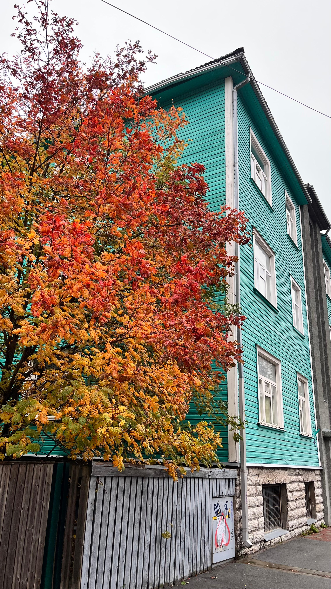

Kalamaja is where Tallinn eats. This former fishermen's quarter on the northern edge of Old Town has transformed into the city's undisputed culinary epicenter, and it did so without losing the rough-hewn charm that made it special in the first place. Colorful wooden houses from the 19th century line the streets, street art covers the old factory walls, and the smell of fresh bread drifts from corner bakeries before most of the city is awake.
What makes Kalamaja remarkable for food isn't just the quality -- it's the range. Within a 15-minute walk you can eat shipping-container street food for under five euros, share travel-inspired small plates at a Michelin Bib Gourmand winner, and then sit down to the only two-Michelin-star tasting menu in the entire Baltic region. No other neighborhood in Tallinn comes close.
The area divides naturally into three culinary zones. Telliskivi Creative City is the pulsing heart -- a converted factory complex where industrial warehouses now house some of the city's most popular restaurants. Noblessner Harbor, the former submarine shipyard on the waterfront, has become home to Tallinn's most ambitious fine dining. And tucked between them, the quiet residential Kalamaja streets hide neighborhood gems that most tourists never find.
I've eaten at every restaurant on this list multiple times. Here's the honest guide.
1. Telliskivi Creative City Restaurants
Telliskivi Creative City occupies a sprawling Soviet-era factory complex next to the Balti Jaam train station. What was once a place for heavy industry is now Tallinn's creative nerve center, and its dining options are among the best in the country. The buildings still have raw concrete walls and steel beams overhead, but the kitchens inside are turning out food that rivals anything in Old Town -- usually at lower prices and with none of the tourist-trap energy.
F-Hoone
International All-Day DiningF-Hoone is the restaurant that proved Telliskivi could be a dining destination. Housed in a cavernous refurbished industrial warehouse with soaring ceilings and exposed brick, it has been packing in crowds since the early days of the creative city -- and the kitchen still delivers. The menu roams from Southeast Asia to the American South without ever feeling confused, and the portions are genuinely generous.
The spicy salmon coconut soup has become something of a Tallinn legend. Rich, aromatic, and packed with tender fish, it's the dish that regulars never stop ordering. Families should know about the dedicated children's play room, which means adults can actually finish a conversation over dinner. In summer, the outdoor terrace expands to roughly 100 seats and becomes one of the best places in the city to eat al fresco.
Price: Main courses ~10-18 EUR · Rating: 8.8/10 on Foursquare · Good for: Families, groups, casual dinners

Fotografiska Restaurant
Sustainable Fine Dining · Michelin Green StarPerched on the 6th floor of the Fotografiska photography museum, this is one of the most visually stunning dining rooms in Northern Europe. Floor-to-ceiling windows wrap around the space, offering 360-degree views across Tallinn's rooftops, the harbor, and the Old Town spires in the distance. But the view isn't the reason people book weeks ahead.
Chef Gerli Travkin has held the Michelin Green Star for four consecutive years, and every dish reflects an uncompromising commitment to sustainability. Menus shift with the seasons, built around foraged ingredients, local producers, and a near-zero-waste philosophy that never feels like a compromise on flavor. The wine list leans heavily natural. An important detail: you do not need a museum ticket to dine here. The restaurant has its own entrance and elevator.
Price: Tasting menus from ~65 EUR · Michelin: Green Star (since 2022) · Tip: Book at least a week ahead, especially weekends
Restaurant Moon
Slavic Cuisine · Michelin Guide SelectedMoon has been a quiet pillar of Tallinn's dining scene for 15 years, earning a Michelin Guide selection along the way. In June 2025 it relocated from its original home to a new space in Telliskivi, and the move only sharpened its focus. The kitchen specializes in Slavic cuisine -- a tradition that goes far deeper than the borscht and blini tourists might expect.
The handmade pelmeni are the star: plump, delicate dumplings filled with different meats and served in rich broths or with dollops of sour cream. The carp baked in sour cream is another standout -- a dish rooted in centuries of Eastern European tradition, executed with the precision you'd expect from a Michelin-recognized kitchen. The atmosphere is warm and unhurried, the kind of place where dinner stretches into the evening naturally.
Price: Main courses ~14-24 EUR · Michelin: Guide Selected · Good for: Date night, winter dinners
Depoo Food Street
Street Food HallDepoo takes the shipping container food hall concept and makes it work beautifully. Repurposed containers line an open-air courtyard, each one housing a different kitchen slinging focused, affordable food. It's the kind of place where your group of four can eat four completely different cuisines and everyone is happy.
The standouts rotate, but the constants are reliable. Dereku Burger produces some of the best smash burgers in Tallinn -- crispy-edged patties, quality buns, no-nonsense toppings. Spice Wagon does Vietnamese street food that would hold its own in any Pho restaurant in Berlin or London. Margot Crepes handles the sweet tooth with buckwheat galettes and Nutella-drizzled crepes. On weekends, live music fills the courtyard, and the whole place takes on a festival atmosphere.
Price: ~5-12 EUR per dish · Vibe: Casual, outdoor, communal · Best time: Weekend afternoons with live music
Peatus
Casual Dining · Novelty VenuePeatus means "station" in Estonian, and the concept is exactly as literal as it sounds: you eat inside authentic railroad dining wagons from the old Tallinn-Moscow route. The carriages have been beautifully restored, complete with original compartments, overhead luggage racks, and the clickety-clack feeling of a train that happens to be permanently parked in Telliskivi.
The food is straightforward -- good burgers, solid pizzas, cold beers -- and that's perfectly fine. The experience of eating in a vintage rail car is the draw, and it works especially well with kids or groups looking for something different. There's a ping pong table outside, and in summer the whole area turns into an impromptu hangout spot with a relaxed, slightly chaotic energy.
Price: ~8-14 EUR per dish · Good for: Families, casual groups, something unusual · Extra: Outdoor ping pong
2. Noblessner Harbor
Noblessner is Tallinn's most dramatic reinvention story. A century ago, this was where the Russian Empire built submarines. Today, the old harbor buildings have been converted into apartments, galleries, a maritime museum, and -- most importantly for this guide -- some of the best restaurants in the Baltics. The waterfront setting adds a dimension that inland restaurants simply can't match, especially during the long summer evenings when the sun lingers over the Baltic Sea until nearly midnight.
180 Degrees by Matthias Diether
Fine Dining · 2 Michelin StarsThis is the pinnacle. 180 Degrees is the only two-Michelin-star restaurant in the entire Baltic region, and eating here is one of those meals that permanently recalibrates your understanding of what food can be. Chef Matthias Diether, who earned his reputation in some of Germany's most celebrated kitchens, creates tasting menus that are technically dazzling without ever feeling cold or clinical.
The restaurant operates on tasting menus only -- there is no a la carte option. Each course arrives as a small revelation: hyperlocal Estonian ingredients treated with techniques drawn from French, Nordic, and Japanese traditions. The dining room sits right on the harbor, and the interplay between the food and the waterfront views creates something genuinely memorable. This is not a spontaneous dinner. Tables book out weeks in advance, and during peak season you should plan a month or more ahead.
Price: Tasting menus from ~135 EUR · Michelin: 2 Stars · Booking: Essential, 3-4 weeks ahead minimum
Lore Bistroo
Sharing Plates · Michelin Bib GourmandIf 180 Degrees is the neighborhood's white-tablecloth jewel, Lore Bistroo is its beating heart. This Michelin Bib Gourmand winner occupies a converted warehouse space with the kind of effortless cool that cannot be manufactured: raw concrete, warm lighting, an open kitchen where chefs move with practiced ease.
The menu is built around sharing plates inspired by the owners' travels. Flavors bounce between the Mediterranean, Middle East, and Scandinavia, and the combinations somehow always land. The wine list is adventurous without being pretentious, leaning natural and small-producer. Lore is the restaurant I recommend most often to visitors who want to experience what makes Tallinn's food scene special right now -- it captures the city's spirit of creative confidence at a price that feels fair.
Price: ~35-50 EUR per person sharing · Michelin: Bib Gourmand · Good for: Date night, groups, adventurous eaters
Pohjala Tap Room
Craft Brewery & BBQPohjala has earned its place in the global Top 100 breweries list, and their Noblessner tap room is the best place on earth to drink their beer. Twenty-four taps rotate through the full range -- from hazy IPAs to Baltic porters aged in whisky barrels -- and the industrial-cathedral setting of the old shipyard building makes every pint feel like an event.
The food program is the surprise. An ex-Faviken chef oversees a Texas BBQ operation that would raise eyebrows in Austin: low-and-slow brisket, pulled pork, house-smoked ribs, all paired with sides that draw on Nordic sensibilities. Brewery tours run regularly and are worth booking -- you'll see the full production line and taste beers that never make it to the tap room. On warm days, the waterfront terrace is one of the best seats in Tallinn.
Price: ~15-25 EUR per person · Taps: 24 rotating · Extra: Brewery tours available · Good for: Beer lovers, groups, casual dinners
3. Kalamaja Streets
Away from the converted factories and harbor developments, the residential streets of Kalamaja hold a quieter kind of restaurant -- the neighborhood spots that locals treat as extensions of their living rooms. These places don't have Michelin stars or Instagram-famous interiors. What they have is character, consistency, and the kind of warmth that comes from feeding the same community week after week.
VESTA Bistro
Estonian Tapas · New OpeningVESTA opened in 2025 and immediately became the hardest reservation in Kalamaja. The concept is Estonian tapas -- small plates that reinterpret local ingredients through a sharing-friendly format -- served in a striking yellow building with communal tables and an atmosphere that encourages strangers to talk to each other.
The kitchen operates Thursday through Saturday only, opening at 5pm, and there's no pretense about why: the chef wants to cook at this pace and no faster. The result is food that feels carefully considered rather than mass-produced. Every dish has a story rooted in Estonian tradition, but the presentations are modern and the flavor combinations are genuinely inventive. Reserve ahead or you will not get in.
Price: ~25-40 EUR per person sharing · Hours: Thu-Sat from 17:00 only · Booking: Essential, reserve online
Boheem Cafe
Brunch & CafeIf you ask Kalamaja locals where to have brunch, this is the name that comes up first. Boheem occupies a vintage wooden house on a quiet residential street, and stepping inside feels like visiting a well-loved family home: mismatched furniture, books on shelves, sunlight streaming through lace curtains.
The brunch menu focuses on classics done right. Crepes are thin and properly French, omelets are fluffy and generously filled, and the coffee is strong enough to wake you up without being bitter. Lonely Planet featured Boheem in their Tallinn guide, and the resulting foot traffic hasn't changed the place one bit. It's still the same unhurried, slightly bohemian morning ritual it always was. Go on a weekday if you want to avoid the wait.
Price: ~8-14 EUR per person · Best for: Weekend brunch, coffee dates · Featured in: Lonely Planet
Kohvik Sesoon
Seasonal European CafeSesoon is built on a simple conviction: cook what's in season, waste nothing, and make the space itself reflect those values. The interior is furnished almost entirely with recycled and upcycled materials -- reclaimed wood tables, repurposed factory lighting, chairs that each have a different history.
The menu changes constantly, driven by what local farms and foragers deliver each week. A dish you loved in September may not exist in October, replaced by something equally good that uses whatever the Estonian autumn has produced. On the first Thursday of each month, Sesoon hosts a chef's dinner -- a set multi-course meal where the kitchen stretches into more ambitious territory. These sell out quickly and are worth planning around.
Price: ~10-18 EUR per dish · Special: Monthly chef's dinners (Thursdays) · Vibe: Eco-conscious, cozy, seasonal
Kalamaja Pagarikoda
Artisan BakerySome mornings the only plan you need is a walk to Kalamaja Pagarikoda. This artisan bakery opens at 7:30am on weekdays, and the smell of fresh bread and cinnamon rolls reaches you half a block before you arrive. The bakers work through the night to fill the shelves by opening, and by mid-morning the best items are gone.
The cinnamon rolls are the headliner -- spiraled, sticky, and spiced just right -- but the real revelation is the bread. Dark Estonian rye, crusty sourdough, seeded loaves that feel like they weigh as much as a small dog. Grab a loaf, a pastry, and a coffee, and eat them on a bench in one of Kalamaja's pocket parks. That's a perfect Tallinn morning.
Price: ~2-6 EUR per item · Hours: Opens 7:30 weekdays · Tip: Arrive early for the best selection
Soo Uulits
Gourmet Street FoodSoo Uulits was one of the first places in Tallinn to take street food seriously -- not as a cheap afterthought, but as a craft worth perfecting. Every sauce is made in-house. Every bun is baked fresh. The fries are hand-cut. This kind of attention to detail is what separates a good burger from a great one, and Soo Uulits consistently lands on the great side.
The menu covers the street food greatest hits: smash burgers with house-ground patties, steamed bao buns filled with slow-cooked meats, and fish and chips using whatever the Baltic catch of the day brings in. It's the kind of food that sounds simple on paper but reveals its quality in every bite. Prices are fair for what you get, and the portions don't leave you wanting.
Price: ~8-15 EUR per dish · Signature: House-made sauces on everything · Good for: Quick lunch, casual dinner, takeaway
Common Mistake
Many guides and social media posts place ROST Bakery in Kalamaja. It's actually in the Rotermann Quarter, a separate neighborhood between Old Town and the port. ROST is excellent, but if you walk to Kalamaja expecting to find it there, you'll be disappointed. Kalamaja Pagarikoda is the neighborhood's own artisan bakery.
4. Tips for Eating in Kalamaja
How to Get There
Kalamaja is a 15-minute walk from Tallinn's Old Town -- just head north through the Balti Jaam train station area and you're there. If you'd rather ride, tram lines 1 and 2 both stop at Balti Jaam, which puts you right at the entrance to Telliskivi Creative City. From Telliskivi, Noblessner Harbor is another 10-minute walk north along the waterfront. The whole neighborhood is compact and flat, making it very walkable.
Best Times to Visit
- Weekday lunch (12:00-14:00): The best deals. Many Kalamaja restaurants offer business lunch specials that are significantly cheaper than dinner service. F-Hoone and Lore Bistroo both have excellent lunch pricing.
- Weekend afternoons: The neighborhood comes alive. Telliskivi hosts its flea market, Depoo has live music, and the terraces fill up. Arrive by noon if you want a table without waiting.
- Summer evenings: From June through August, the waterfront restaurants at Noblessner are at their best. The sun doesn't set until nearly midnight, and eating outdoors by the harbor is one of Tallinn's great pleasures.
Reservation Tips
Most casual Kalamaja spots don't require reservations on weekdays. But two restaurants absolutely demand advance booking:
- 180 Degrees by Matthias Diether: Book 3-4 weeks ahead, more during summer. This is a non-negotiable -- walk-ins do not happen at a two-star Michelin restaurant.
- Fotografiska Restaurant: Book at least a week ahead for dinner, especially Friday and Saturday. Weekday lunches are slightly easier to secure.
- VESTA Bistro: With only three service nights per week, this one fills fast. Book online as soon as the calendar opens.
For everywhere else, a same-day phone call or walk-in will usually work, especially outside peak hours.
Save on Every Visit
Several Kalamaja restaurants are Nomi Pass partners. Members get 15-20% off the bill at participating spots across the neighborhood. If you're planning to eat your way through this list, the pass can pay for itself in a single evening.
5. Frequently Asked Questions
Where is Kalamaja in Tallinn?
Kalamaja sits directly northwest of Tallinn's Old Town, stretching from the Balti Jaam train station to the Noblessner harbor along the northern coastline. It's one of Tallinn's oldest residential neighborhoods, historically home to fishermen and factory workers. Today it's the city's most sought-after area for creative businesses, restaurants, and young professionals. Getting there is easy: walk 15 minutes north from Old Town, or take tram 1 or 2 to the Balti Jaam stop.
Is Kalamaja worth visiting for food?
Without question, yes. Kalamaja has the highest concentration of excellent restaurants in Tallinn. It is home to the only two-Michelin-star restaurant in the Baltics (180 Degrees), a Michelin Green Star winner (Fotografiska), a Michelin Bib Gourmand recipient (Lore Bistroo), and a Michelin Guide Selected restaurant (Moon) -- all within walking distance of each other. Beyond the accolades, the neighborhood offers everything from five-euro street food to world-class tasting menus, with far fewer tourist traps than Old Town. If you only have time for one Tallinn neighborhood beyond the medieval center, make it Kalamaja.
What is Telliskivi Creative City?
Telliskivi Creative City is a former Soviet-era industrial complex that has been transformed into Tallinn's largest creative hub. Spanning several interconnected factory buildings next to the Balti Jaam train station, it houses restaurants, cafes, design shops, galleries, a cinema, and event spaces. For food, it's home to F-Hoone, Fotografiska Restaurant, Restaurant Moon, Depoo Food Street, and Peatus, among others. The weekend flea market draws big crowds, and the courtyards come alive with events, pop-ups, and live music throughout the summer.
Explore Kalamaja for Less
Nomi Pass members get 15-20% off at restaurants across Kalamaja and the rest of Tallinn. One membership, your whole table.
Join the WaitlistKeep Exploring Tallinn
Kalamaja is just one chapter in Tallinn's food story. These guides cover more of the city:
- The Complete Tallinn Food Guide -- an overview of every neighborhood and cuisine
- Cheap Eats in Tallinn -- the best meals in the city for under 15 euros
- Best Cocktail Bars in Tallinn -- where to go after dinner